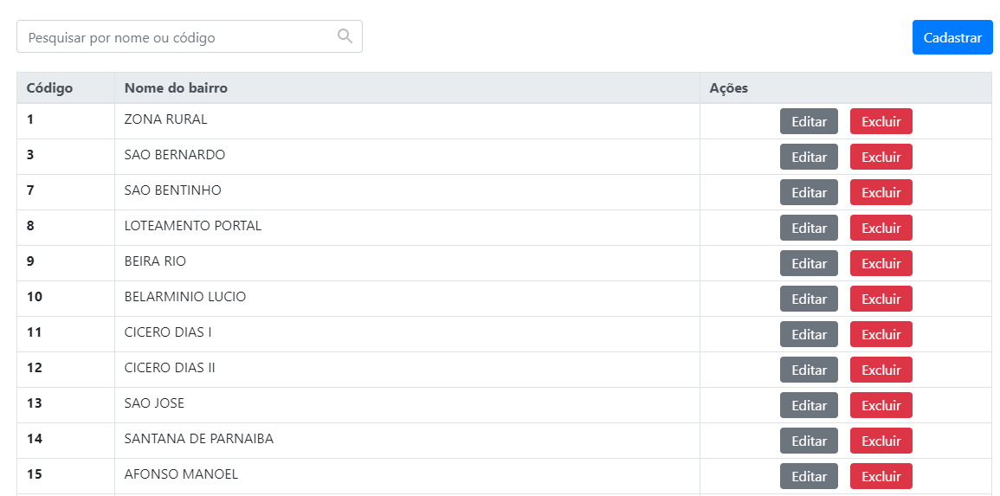

Registro de novos atendimentos em 4 passos
O sistema conta com um registro de atendimento dinâmico em 4 passos, onde o usuário pode ir para a próxima etapa do cadastro como também pode voltar para a página anterior, isso tudo sem perder os dados já digitados, pois o sistema trabalha com um armazenamento interno persistente, onde os dados não são perdidos ao voltar uma etapa para consertar um alteração inconclusiva.
Registro de unidades ilimitadas
Na SEMDHS, o sistema foi integrado com 3 unidades, porém, podem ser registradas unidades de forma ilimitada, o painel é escalável, conseguindo se adaptar a qualquer outra secretaria pública que presta serviços a comunidade local.
Registro de serviços associados a uma unidade específica
O registro de serviços é sempre associado a uma unidade registrada no sistema, dessa forma, o sistema consegue manter a integridade entre a unidade e o tipo de serviço que será prestado.
Registro de endereços da cidade: nome da rua, tipo e bairro
Como forma de facilitar o cadastro do endereço do cidadão, o sistema conta com um cadastro de endereços(nome da rua, tipo e bairro), após o cadastro dos endereços, o sistema conta com um recurso de auto completar, evitando assim, nomes incorretos no ato de registrar os endereços dos cidadãos.


Cadastro dos perfis de usuários que terão acesso ao sistema totalmente personalizável
O sistema conta com a criação de perfis ilimitados, podem ser criados perfis diferentes para cada unidade associada, um perfil associado a uma unidade específica é totalmente independente de outro perfil igual que é associado a outra unidade.
Sistema de login simples e objetivo
A página de login é objetiva, sem muitas informações para não tirar a atenção do usuário que vai logar na plataforma, para entrar no sistema é bem simples, bastando apenas inserir o nome de usuário e senha, os usuários são criados internamente pelo administrador do sistema.
Tecnologias utilizadas
Para o desenvimento deste sistema foram utilizadas as seguintes tecnologias: PHP 7.1 com o gerenciador de dependências Composer, HTML5, CSS3 com enfase no flex-box, javascript utilizando AJAX e recursos do Ecma Script 2015, 2016, 2017, 2018, servidor web Apache, por fim, foi utilizado o padrão de arquitetura MVC(Model View Controller) adotado amplamente no mundo inteiro.
PHP 7
HTML5
CSS3
JS